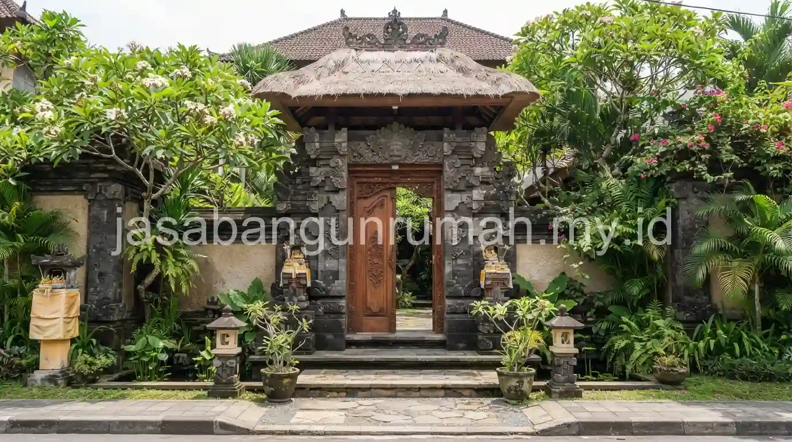

Daftar Isi
- Apa Itu Angkul-Angkul dan Bagaimana Bentuknya Diadaptasi pada Rumah Modern?
- Apa Fungsi Courtyard atau Taman Tengah pada Arsitektur Bali Modern?
- Bagaimana Konsep Bale Bengong Tradisional Diadaptasi Menjadi Gazebo Modern?
- Bagaimana Ketiga Elemen Ini Membentuk Identitas Arsitektur Bali Modern secara Keseluruhan?
- Material Apa Saja yang Umum Dipadukan untuk Menghadirkan Nuansa Bali Modern?
- Bagaimana Arsitektur Bali Modern Merespons Iklim Tropis Lembap?
Arsitektur Bali modern tropis menggabungkan elemen tradisional seperti angkul-angkul, courtyard, dan bale bengong dengan pendekatan desain kontemporer, menghasilkan hunian yang tetap berakar pada identitas lokal namun tampil lebih kontemporer.
Apa Itu Angkul-Angkul dan Bagaimana Bentuknya Diadaptasi pada Rumah Modern?
Angkul-angkul adalah gapura pintu masuk khas arsitektur tradisional Bali yang secara filosofis menandai batas antara area luar dan area dalam rumah, sekaligus berfungsi sebagai elemen penyambut yang memberi kesan pertama pada tamu yang berkunjung.
Pada arsitektur Bali modern, bentuk angkul-angkul yang pada bangunan tradisional umumnya dihiasi ukiran detail dan atap berundak, disederhanakan menjadi struktur gapura dengan garis lebih bersih dan minim ornamen, namun tetap mempertahankan proporsi dan posisi yang khas sebagai penanda pintu masuk utama. Material yang digunakan juga mengalami adaptasi, dari batu paras berukir penuh pada versi tradisional menjadi kombinasi batu paras polos dengan aksen kayu atau beton ekspos pada versi modern, sehingga tampilan tetap terasa Bali namun lebih sesuai dengan selera kontemporer.
Penempatan angkul-angkul pada rumah modern juga tidak selalu harus berdiri sebagai struktur terpisah seperti pada bangunan tradisional, melainkan dapat diintegrasikan dengan pagar atau dinding depan rumah sebagai satu kesatuan desain fasad, tanpa mengurangi makna simbolis sebagai elemen pembatas sekaligus penyambut yang menjadi ciri khasnya. Jika Anda ingin mewujudkan desain fasad Bali yang autentik, tim jasa arsitek kami siap membantu merancang proporsi angkul-angkul yang tepat sesuai lahan Anda.
Apa Fungsi Courtyard atau Taman Tengah pada Arsitektur Bali Modern?
Courtyard atau taman tengah pada arsitektur Bali modern berfungsi sebagai titik pusat sirkulasi udara dan cahaya alami yang menghubungkan berbagai ruang di sekeliling rumah, sekaligus menghadirkan nuansa hijau yang menyatu langsung dengan ruang dalam bangunan.
Konsep ini merupakan pengembangan dari filosofi arsitektur tradisional Bali yang menata bangunan secara terpisah-pisah di sekeliling halaman tengah, di mana setiap bangunan memiliki fungsi spesifik namun tetap terhubung melalui ruang terbuka di tengahnya. Pada rumah modern, prinsip ini diterjemahkan menjadi taman kecil atau kolam yang ditempatkan di area tengah denah, dikelilingi oleh ruang-ruang utama seperti ruang keluarga, kamar tidur, atau koridor penghubung.
Keberadaan courtyard membantu menjaga sirkulasi udara tetap lancar tanpa terlalu bergantung pada pendingin ruangan, karena udara dapat mengalir melalui bukaan yang mengarah ke taman tengah tersebut. Selain fungsi praktis ini, courtyard juga memberi privasi tambahan bagi penghuni, karena ruang hijau yang berada di tengah bangunan tidak terlihat langsung dari luar, berbeda dengan taman depan yang biasanya lebih terbuka terhadap pandangan dari jalan.
Pada rumah dengan lahan terbatas, konsep courtyard tetap dapat diterapkan dalam skala kecil, misalnya berupa void kecil dengan satu atau dua pohon dan tanaman rambat, yang meski berukuran mini tetap mampu menghadirkan fungsi pencahayaan dan sirkulasi udara alami sesuai prinsip dasarnya.
Bagaimana Konsep Bale Bengong Tradisional Diadaptasi Menjadi Gazebo Modern?
Bale bengong pada arsitektur tradisional Bali adalah bangunan kecil beratap dengan lantai sedikit ditinggikan, berfungsi sebagai tempat bersantai, beristirahat, atau menerima tamu secara informal di area terbuka rumah tradisional Bali.
Pada arsitektur Bali modern, bale bengong diadaptasi menjadi gazebo dengan struktur yang lebih sederhana, menggunakan material seperti kayu jati atau kayu ulin untuk tiang dan lantai, dipadukan dengan atap yang dapat berupa material modern seperti atap sirap kayu atau bahkan material metal yang dibentuk menyerupai siluet atap tradisional. Posisi bale bengong modern ini umumnya ditempatkan di area taman belakang, dekat kolam renang, atau sudut halaman yang memiliki pemandangan terbaik dari lahan.
Fungsi bale bengong modern pada dasarnya tidak jauh berbeda dari versi tradisionalnya, yaitu sebagai ruang transisi antara dalam dan luar rumah yang digunakan untuk bersantai, membaca, atau sekadar menikmati udara terbuka tanpa sepenuhnya berada di luar ruangan. Pada villa atau rumah mewah, bale bengong modern terkadang dilengkapi dengan furnitur built-in seperti daybed kayu, sehingga fungsinya berkembang lebih jauh sebagai area istirahat semi-outdoor yang nyaman digunakan sepanjang hari.
Bagaimana Ketiga Elemen Ini Membentuk Identitas Arsitektur Bali Modern secara Keseluruhan?
Kombinasi angkul-angkul sebagai elemen penyambut, courtyard sebagai jantung sirkulasi udara dan cahaya, serta bale bengong sebagai ruang relaksasi terbuka, bersama-sama membentuk karakter khas arsitektur Bali modern yang membedakannya dari gaya arsitektur tropis modern pada umumnya di wilayah lain.
Ketiga elemen ini tidak hanya berfungsi sebagai dekorasi tambahan, melainkan mencerminkan filosofi ruang tradisional Bali yang menekankan keseimbangan antara ruang tertutup dan ruang terbuka, serta hubungan erat antara bangunan dengan alam sekitarnya. Penerapan ketiganya secara konsisten dalam satu desain rumah modern menghasilkan hunian yang terasa otentik secara budaya, namun tetap relevan dengan kebutuhan gaya hidup kontemporer penghuninya.
Material lokal seperti batu paras, kayu jati, dan bata ekspos khas Bali turut memperkuat identitas ini, karena tekstur dan warna alami material tersebut secara visual langsung mengasosiasikan bangunan dengan karakter tropis khas pulau Bali, berbeda dari material modern generik yang dapat ditemukan di berbagai wilayah lain tanpa ciri khas lokal yang kuat.

Material Apa Saja yang Umum Dipadukan untuk Menghadirkan Nuansa Bali Modern?
| Material | Elemen yang Umum Menggunakan | Alasan Pemilihan |
|---|---|---|
| Batu Paras | Angkul-angkul, dinding fasad, dinding courtyard | Tekstur alami khas Bali, tahan terhadap cuaca tropis lembap |
| Kayu Jati atau Ulin | Tiang dan lantai bale bengong, decking sekitar courtyard | Kuat, tahan lama, dan memberi kehangatan visual pada ruang terbuka |
| Bata Ekspos | Dinding pagar, aksen dinding dekat angkul-angkul | Memberi tekstur tambahan yang selaras dengan batu paras dan kayu |
Perpaduan ketiga material ini biasanya tidak digunakan secara merata di seluruh bagian rumah, melainkan ditempatkan secara selektif pada titik-titik tertentu yang ingin ditonjolkan, misalnya batu paras pada angkul-angkul dan dinding courtyard, sementara dinding fasad utama tetap menggunakan finishing plester halus bernuansa netral agar kesan modern tetap dominan tanpa kehilangan sentuhan lokal pada detail-detail pentingnya.
Bagaimana Arsitektur Bali Modern Merespons Iklim Tropis Lembap?
Selain aspek filosofi dan estetika, ketiga elemen angkul-angkul, courtyard, dan bale bengong juga memiliki fungsi praktis dalam merespons iklim tropis lembap yang menjadi karakter cuaca di Bali sepanjang tahun.
Courtyard misalnya, tidak hanya berfungsi sebagai elemen estetika semata, tetapi juga membantu menurunkan suhu di dalam rumah secara alami melalui proses sirkulasi udara silang, sehingga kebutuhan pendingin ruangan buatan dapat dikurangi meski suhu udara di luar cukup panas pada siang hari. Bale bengong yang terbuka di beberapa sisi juga dirancang agar udara dapat mengalir bebas tanpa terperangkap, berbeda dengan ruang tertutup yang lebih mudah terasa pengap apabila ventilasinya kurang memadai.
Atap pada bale bengong maupun bangunan utama rumah bergaya Bali modern juga umumnya tetap mempertahankan kemiringan yang cukup untuk mengalirkan air hujan secara efektif, mengingat curah hujan di Bali pada musim tertentu dapat cukup tinggi meski tidak seekstrem beberapa wilayah dataran tinggi lain di Indonesia. Kombinasi antara bentuk atap yang fungsional dengan material lokal yang estetik ini menjadi bukti bahwa arsitektur Bali modern tidak hanya mengejar nilai visual, tetapi juga tetap mempertimbangkan kenyamanan tinggal sesuai kondisi iklim setempat.
Bagi pemilik lahan yang tertarik mewujudkan rumah atau villa dengan identitas arsitektur Bali modern yang autentik, perencanaan ketiga elemen ini sebaiknya dilakukan secara terpadu sejak tahap konsep awal bersama kontraktor rumah yang memahami filosofi dan proporsi tradisional Bali, agar hasil akhirnya tidak sekadar menempelkan ornamen Bali secara acak, melainkan benar-benar mencerminkan prinsip ruang dan material yang menjadi akar gaya arsitektur ini. Pendekatan yang matang sejak awal juga membantu memastikan proporsi antara elemen tradisional dan sentuhan modern tetap seimbang, sehingga rumah yang dihasilkan terasa autentik tanpa terkesan berlebihan maupun kehilangan karakter khasnya.